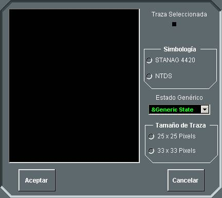

- Crear / Modificar / Borrar: Mediante estas opciones del menú Trazas, el alumno y el instructor pueden acceder a distinta funcionalidad en función del elemento seleccionado con el Hook. En la siguiente tabla se resume la funcionalidad a la que accede en cada caso:
Tipo de
Consola |
Selección
Hook |
Crear |
Modificar |
Borrar |
| Alumno |
Unidad
Propia |
Creación / Modificación
de Contactos |
No permitido |
No permitido |
Contacto
Adquirido |
Creación / Modificación
de Contactos |
Creación / Modificación
de Contactos |
No permitido |
Marcación
Adquirida |
Creación / Modificación
de Contactos |
Modificar Track Number |
No permitido |
Contacto
Manual |
Creación / Modificación
de Contactos |
Creación / Modificación
de Contactos |
Se elimina el
Contacto Manual |
| Nada |
Creación / Modificación
de Contactos |
No permitido |
No permitido |
| Instructor |
Unidad |
Creación / Modificación
de Contactos |
Datos Generales de
la Unidad |
No permitido |
Contacto
Manual |
Creación / Modificación
de Contactos |
Creación / Modificación
de Contactos |
Se elimina el
Contacto Manual |
| Nada |
Creación / Modificación
de Contactos |
No permitido |
No permitido |
Las acciones referenciadas en la columna “Modificar” se ejecutan también si estando el cursor en modo Hook el operador (alumno o instructor) hace doble clic sobre el elemento correspondiente listado en la columna “Selección Hook”.
El diálogo de Datos Generales de la Unidad se describe en el apartado Manual de Instructor – Control de Ejercicios – Datos Generales de Unidades.
Mediante el diálogo de Creación / Edición de Contactos Manuales, el Alumno puede crear / modificar Contactos Manuales locales a la unidad controlada o modificar contactos adquiridos. Mediante este diálogo, el Instructor (cuando no controla una unidad) puede crear / modificar trazas manuales visibles sólo para todos los instructores.
A continuación se describe el diálogo de Creación / Edición de Contactos:
- Identidad: Mediante este desplegable se selecciona la Identidad de del contacto manual o adquirido.
- Símbolo: En esta área se puede seleccionar la Categoría del contacto manual o adquirido de entre los más frecuentes, utilizando la simbología (NTDS o STANAG 4420) que se haya seleccionado en la opción correspondiente del menú Ver - Simbología. En el caso de que la categoría buscada no aparezca en esta lista, deberá seleccionarse la opción Más trazas... que abre otra ventana donde aparece la jerarquía completa de símbolos:

- Latitud / Longitud: Posición de la traza. Si es creación de contacto manual, por defecto, al abrir esta ventana se rellenan estos campos con la posición del Hook, y si es modificación se rellenan con los valores actuales de la traza modificada. Estos campos son no editables cuando se está modificando un contacto adquirido.
- Identificación (TN): Número de Traza. Si se trata de un alumno, al abrir esta ventana para creación se muestra en este campo el texto "auto". Si este texto no se modifica, el sistema asignará automáticamente al contacto creado un track number válido, teniendo en cuenta los contactos que ya tiene la unidad. Si es se trata de un instructor que no esté controlando a una unidad, este campo aparece vacío y en él puede introducir un identificador que debe ser único. Al abrir esta ventana para modificación, en este campo se muestra el identificador actual de la traza manual.
- Rumbo: Rumbo de la traza en grados. Al abrir esta ventana para modificación se rellena con el valor actual de rumbo de la traza modificada. Esta campo no es editable si está modificando un contacto adquirido.
- Velocidad: Velocidad de la traza en nudos. Al abrir esta ventana para modificación se rellena con el valor actual de velocidad de la traza modificada. Esta campo no es editable si está modificando un contacto adquirido.
Los siguientes campos, incluidos dentro del área de datos denominada Datum, se muestran sólo cuando el símbolo elegido es un Datum.
- Velocidad Estimada: Valor de la velocidad estimada para el Datum en nudos.
- Error: Error del Datum en Millas
- Día: Día y Hora del Datum.
La representación gráfica del Datum incorpora un círculo de radio inicial (a la Hora del Datum) igual al Error del Datum, y que a partir de dicho instante crece a una velocidad igual a la Velocidad Estimada del Datum.
- Comentario: Texto adicional de uso libre. El texto aquí introducido se mostrará en la última línea de la etiqueta de la traza mientras la opción de etiqueta extendida esté seleccionada.
Los botones REPOS (reposicionar) y POSCOR (corrección de posición) se emplean para realizar ploteos de contactos manuales, de forma que actualizando su posición, se genere automáticamente un contacto con una ley de movimiento (rumbo y velocidad), según estas actualizaciones. Estos botones sólo podrán ser pulsados si se está editando un contacto manual.
- REPOS: Cuando se pulsa este botón, el contacto manual seleccionado con el Hook se sitúa en la posición de la marca, manteniendo el rumbo y la velocidad.
- POSCOR: Cuando se pulsa este botón, el contacto manual seleccionado en Hook se mueve a la posición de la marca, y se le asigna un rumbo igual al determinado por la dirección Hook‑Marca, y una velocidad igual a la necesaria para ir en línea recta desde la posición del Hook hasta la Marca, en el tiempo transcurrido desde la última actualización del contacto manual. Si además, cuando se solicita POSCOR la Marca está enganchada a otro contacto manual, este contacto se elimina. Cuando se realiza esta acción, deja una marca en la posición anterior del contacto. Además, si el POSCOR se hace sobre un DATUM, se cambia su categoría pasando a ser SUBMARINO de identidad PENDING.
Con esta funcionalidad, el operador podrá plotear contactos submarinos mediante el siguiente procedimiento:
- Cuando intercepten demoras de varias sonoboyas, o a detectar por MAD, crear un contacto manual en la posición de posible contacto submarino.
- Transcurrido un tiempo, volver a crear un contacto manual sobre la intersección de las demoras de sonoboyas o sobre una nueva detección por MAD.
- Seleccionar con el Hook el primer contacto creado y con la marca el segundo. Abrir el diálogo de edición de contactos, y pulsar POSCOR. Tras esta operación tendremos un único contacto manual con la ley de movimiento observado.
- Restaurar Track Number: Esta acción sólo puede realizarse sobre contactos adquiridos (no manuales) o marcaciones adquiridas. Si se selecciona esta opción con uno de estos elementos en Hook al que se le haya modificado el Track Number manualmente, entonces su número de traza retorna al valor inicialmente asignado por el sistema de forma automática.
- Restaurar Categoría: Esta acción sólo puede realizarse sobre contactos adquiridos (no manuales). Si se selecciona esta opción con un contacto adquirido en Hook al que se le haya modificado manualmente la Categoría y / o Identidad, entonces su categoría e identidad retornan al valor determinado por los sensores de la unidad.
- Enviar por Link 11: Esta acción activa el envío por Link 11 de la marcación seleccionada con el Hook. Sólo puede realizarse sobre marcaciones adquiridas.
- Detecciones compiladas: Al seleccionar esta opción se abre una ventana donde aparece una lista de todas las detecciones compiladas obtenidas por todos los sensores de la unidad propia (tote de tracks).
Las detecciones listadas en este diálogo pueden ser filtradas por categoría, identidad y / o sensor. Si se selecciona en la lista una detección, en la Presentación Táctica se enganchará el hook a dicha detección. Si se hace doble clic sobre una detección de la lista, en la Presentación Táctica el hook se engancha a dicha detección y la vista se centra en la posición del hook (o lo que es lo mismo, de la detección).